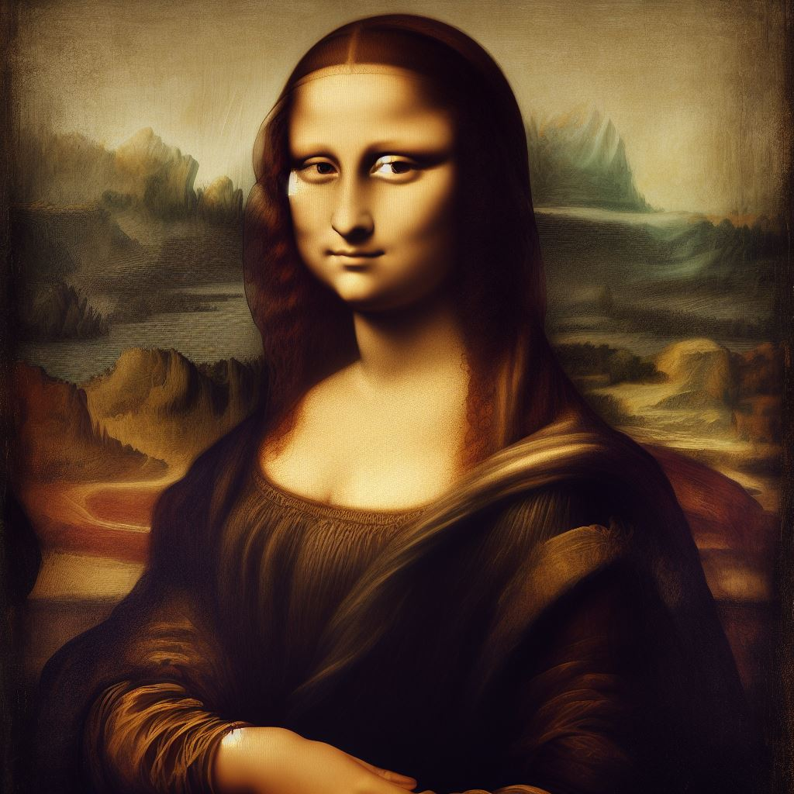

Sanatın Büyüsü
Sanatın büyüsü, sanatçıların duygularını, düşüncelerini ve hayal güçlerini çeşitli formlarda ifade etmeleriyle ortaya çıkar.

Leonardo da Vinci'nin Mona Lisa Portresi
Mona Lisa, Rönesans döneminin önde gelen sanat eserlerinden biridir. Leonardo da Vinci'nin ustalığı, tablonun detayları, gizemli gülümsemesi ve bakışları arasında kaybolan bir güzellik yaratır. Bu eser, sanatın zamansız gücünü temsil eder.
ANASAYFA